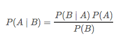
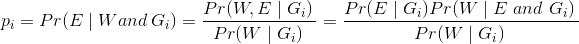
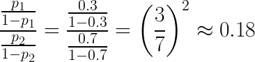
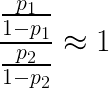

Judgment heuristic
an informal algorithm which generates an approximate answer to a problem
Rules of thumb are basically special cases of heuristics
Heuristics speed up cognition
Heuristics occasionally produce incorrect answers
The repititive and consistent errors are known as biases
These are the unintended side effects of generally adaptive and efficient processes
Studies the collection, processing and representation of information by complex biological machines
Kahneman and Tversky are two of the leaders in this field
They identified three important judgment heuristics
in a series of pathbreaking contributions in the early 1970's
representativeness
availability
anchoring
People don't process info by using Bayes formula
1 in 100 people in the world have a disease.
We have a test for it.
If someone has the disease, she has a 99% chance of testing positive.
If someone doesn't have the disease, she has a 99 negative.
Gene took the test, and tested positive.
Assuming that Gene was drawn randomly from the population
What is the probability that she has the disease?
Apply Bayes rule
In practice, the Bayes rate Pr(D) is rarely used.
A proxy for probabilistic decision making, e.g.,
Bob is very shy and withdrawn, invariably helpful, but with little interest in people, or in the world of reality. A meek and tidy soul, he has a need for order and structure and a passion for detail.
carpenter
salesman
airline pilot
librarian
physician
How similar is Bob to a carpenter, salesman, airline pilot, librarian, or physician?
Are Subject rankings of probability and similarity the same?
This is true, if similarity predicts true probability.
Consider the following example:
Linda is 31 years old, single, outspoken, and very bright. She majored in philosophy. As a student, she was deeply concerned with issues of discrimination and social justice, and also participated in anti-nuclear demonstrations.
Please rank the following statements by their probability, using 1 for the most probably and 8 for the least probable.
depending on the subject population, 80%–90% rank item 8 as more likely than item 6.
K&T call this the conjunction effect (since the conjunctive event receives a HIGHER probability)
done with naive subjects (undergrads from UBC and Stanford with no background in probability or statistics)
done with intermediate subjects (graduate students in psychology, education and medicine from Stanford, who had taken several courses in probability and statistics)
done with sophisticated subjects (graduate students in the decision science program of the Stanford Business School who had taken several advanced courses in probability and statistics)
results are nearly identical for these three groups
also similarity ranks perfectly coincide with probability ranks
Maybe “Linda is a bank teller," is interpreted as “Linda is a bank tellerand is NOT active in the feminist movement."
Response: run a between-subject design (in contrast to the withinsubject design described above)
Specifically, show some subjects (group A) the list without the conjunctive event (item 8).
Show other subjects (group B) the list without the critical non-conjunctive events (items 3 and 6).
Group B ranks “8” higher than Group A ranks “6”
Please rank the following events by their probability of occurrence in 1981.
Suppose Bjorn Borg reaches the Wimbledon finals in 1981. Please rank order the following outcomes from most to least likely.
Similarity is sometimes a poor predictor of true probability.
Probability follows the conjunction rule: P(A ∩ B) < P(B).
The probability that Linda is a feminist bank teller (feminist ∩ bank teller = A ∩ B) is less than the probability that Linda is a bank teller (bank teller = B).
Similarity relations do not follow the conjunction rule.
E.g., similarity between a blue square and a blue circle (blue ∩ circle = A ∩ B) is greater than the similarity between a blue square and a circle (circle = B).
Insensitivity to prior probabilities of outcomes
Ignorance of sample size
Misconceptions of chance
Indifference to predictability
The illusion of validity?
Misconceptions of regression
Jack has been drawn from a population which is 30% engineers and 70% lawyers.
Jack wears a pocket protector.
What is the probability Jack is an engineer?
Jack's been drawn from a population which is 30% lawyers and 70% engineers.
Jack wears a pocket protector.
What is the probability Jack is an engineer?
We will denote Problem 1 probability by p1 and Problem 2 probability by p2.
What is the probability that Jack is an engineer as a result of both expreriments?
If E = “Engineer," W = "wears a pocket protector", and Gi = “Problem i”, then, the Bayes law says
We implictly assume that conditional probabilities of wearing a pocket protector are the same in both problems. In an actual experiment we need to make this explicit, and embed it in the story we tell.
Using the above mentioned Bayes laws and simplifying
We arrive at probability of
But, in the lab:
What happens when we give the subjects no information other than base rates?
What happens when we change the description to something uninformative like, “Jack went to college."
subjects assess the likelihood of a sample result by asking how similar that sample result is to the properties of the population from which the sample was drawn
A certain town is served by two hospitals. In larger hospital, 45 babies born per day. In smaller hospital, 15 babies born per day. 50% of babies are boys, but the exact percentage varies from day to day. For a period of 1 year, each hospital recorded the days on which more than 60 percent of the babies born were boys. Which hospital do you think recorded more such days?
The large hospital?
The small hospital?
About the same (within 5% of each other)
Misconceptions of chance (the law of small numbers)
people expect that a sequence of events generated by a random process
will represent the essential characteristics of that process
even when the sequence is short
so if a coin is fair, subjects expect H H H to be followed by a T(gambler's fallacy)
if girls are as likely as boys, subjects expect GGG to be followed by B
so BCG BBG is viewed as a much more likely sequence than BBBBBB
people expect that the essential characteristics of the process will be represented
not only globally in the entire sequence
but also locally in each of its parts
even scientists make this mistake
overpredicting the likelihood that
small sample results will replicate on larger samples
All families of six children in a city were surveyed. In 72 families the exact order of births of boys and girls was GBGBBG.
What is your estimate of the number of families surveyed in which the exact order of births was BGBBBB?
In standard subject pools approx. 20% get it right and the median estimate is 30.
predictions are often made by representativeness
if a company is described favorably (e.g., lots of profitable new products)
we predict outcomes that are similar (e.g., high future stock returns)
the predictions are unaffected by the reliability of the information
and the predictability of the outcomes
Subjects were presented with several paragraphs describing the performance of a student teacher during a single practice lesson. Subjects were asked to evaluate the quality of lesson (in percentile scores). Other subjects were asked to predict, also in percentile scores, the standing of each student teacher 5 years after the practice session. The judgments were identical.
extreme outliers tend to regress toward the mean in subsequent trials
(e.g., best performers on the midterm, fighter pilots with the best landings, tall fathers)
but intuitively, we expect subsequent trials to be representative of the previous trial
so we fail to anticipate regression to the mean
People assess the frequency of a class or the probability of an event
by the ease with which instances or occurrences can be brought to mind
What percentage of commercial flights crash per year?
What percentage of American households have less than $1,000 in net financial assets, including savings accounts, checking accounts, CD's, stocks, bonds, etc... (but not counting their most recent paycheck or their defined benefit and defined contribution pension assets)?
What is the population of greater Boston (USA)?
What is the population of greater Osaka (Japan)?
a class whose instances are easily retrieved
will appear more numerous than
a class of equal frequency whose instances are less retrievable
Does this list contain more names of men or women?
When the list contains male names
that are slightly more famous than the female names
subjects conclude that the list is disproportionately male.
When the list contains female names
that are slightly more famous than the male names
subjects conclude that the list is disproportionately female.
Subjects erroneously conclude that the class (sex) that had the more famous personalities was the more numerous.
familiar (Harrison Ford vs. Geraldine Page)
important (death of a parent in a car accident vs. car accident reported on evening news)
personal (uncle Bob's story about his Volvo vs. statistical report on Volvos)
recent (yesterday's "close call" vs. stale "close call")
Suppose one samples words (3+ letters) at random from English texts.
is it more likely that the words will begin with an r or have an r as the third letter?
What is the probability that a seven-letter word would end in "ing"?
What is the probability that a seven-letter word would have “n” as its sixth letter?
Suppose you had 10 people who you had to organize into committees of k members
How many different committees of k members can you form?
What if k = 2?
What if k = 8?
Claim: Suppose you have N objects in a set and you want to choose subsets of size k. The number of subsets of size k is equal to the number of subsets of size N – k.
Proof: For every subset of size k you can form a subset of size N – k made up of the objects excluded from the original k-subset.
Suggestive evidence for availability effects in the real world
people with older siblings prepare more for retirement
How should you overcome availability effects (when making important decisions)?
enumerate extensive lists of possible outcomes
simulate to identify outcomes that you hadn't imagined
(when the door is opened it hits the rear-view mirror)
understand the ways in which your memory base is biased;
these biases will effect your probability judgments
you under-rehearse unpleasant memories, leading to biased availability-based inferences
Anchors seem to matter
starting points, frames, defaults, etc....
People make estimates by starting from an initial value that is adjusted to yield the final answer; typically, these adjustments are insufficient potentially because the adjustment is stopped when the answer becomes sufficiently close to the correct answer (Slovic and Lichtenstein; Kahneman and Tversky; Quattrone et al; Wilson et al; see too the literature on satisficing).
Subjects take the question as a hint from the experimenter (Kahneman and Tversky; Schwarz).
Subjects subconsciously recruit memories consistent with the anchor (Strack; Wilson and Brekke; Gilbert).
Kahneman and Tversky's first anchoring experiment
subjects were asked to estimate the percentage of African countries in the UN
first spin Wheel of Fortune —> random number
guess whether % African > random number
then guess % African
spin = 10 –> % African = 25
spin = 60 —> % African = 45
Where does anchoring bias matter?
E.g. in conducting surveys
Some experiments of this type do yield strong effects
8 x 7 x 6 x 5 x 4 x 3 x 2 x 1
1 х 2 x 3 x 4 x 5 x 6 x 7 х 8
First sequence median guess: 2250
Second sequence median guess: 512
Correct answer: 40,320
People tend to overestimate the probability of conjunctive events (e.g., all 15 parts of my thesis will proceed as planned, enabling me to handit in on time).
People tend to underestimate the probability of disjunctive events (at least one part of my thesis will go horribly wrong, leading to a terrible sequence of all-nighters).
How many people live in...
Ankara, Guiyang, Changsha, Rochester, Sheffield, Frankfurt, Sao Paulo, Mogadischo, Greensboro, Ottawa
these cities were picked randomly from a list of the world's 380 largest cities
Write down your 98% confidence intervals for each city
X such that there is a 99% chance that the true value is greater than X
Y such that there is a 99% chance that the true value is less than Y
Ankara (3,4), Guiyang (1.5), Changsha (1.8), Rochester (1.1), Sheffield (1.3), Frankfurt (2.0), Sao Paulo (18.4), Mogadischo (1.2), Greensboro (1.2), Ottawa (1.1)
Subjects generate 99% confidence intervals which only contain 80% of the true answers
| Space | Forward |
|---|---|
| Right, Down, Page Down | Next slide |
| Left, Up, Page Up | Previous slide |
| P | Open presenter console |
| H | Toggle this help |